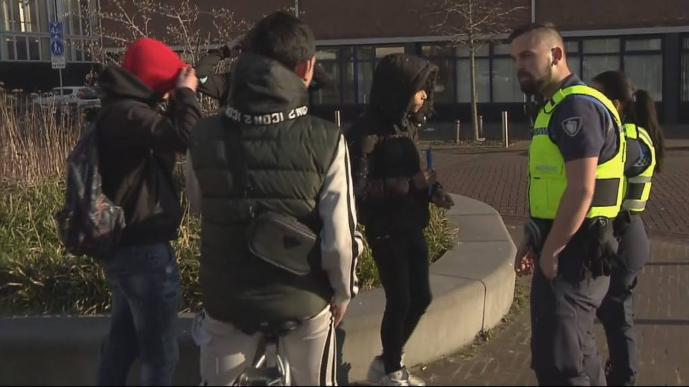
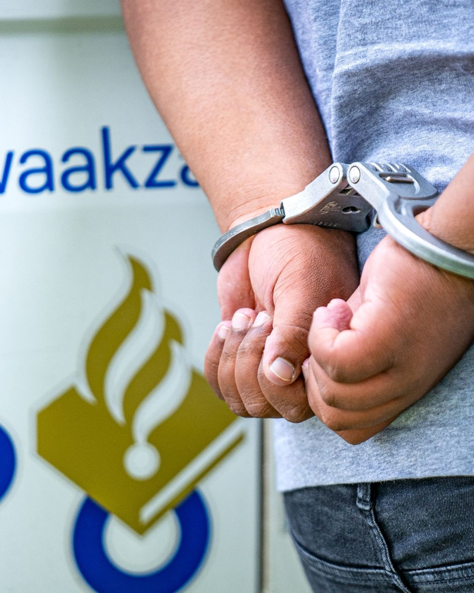

de be doel van deze doelstelling is. om in groepen van 2, een maatschappelijke probleem te bedenken, en onderzoeken van een land waar van je klasgenoten van daan komen, dat kan een ampagne zijn, een benefietevenement, een workshop of training in
technologie,
of zelfs het organiseren van een evenement dat de cultuur
van het land in de schijnwerpers zet om geld en bewustzijn te werven.
ICT'ers kunnen ook helpen met een maatschappelijk belang met bijvoorbeeld website maken voor de doel of een, infographic. wat mijn team wilt bereiken , is om meer mensen bewust te maken dat veel meer jongeren in de criminaliteit te komen zijn